Unidad 3 - Práctica 1. Instalación de Tomcat y Mava para despliegue de aplicación Java
Para la realización de esta práctica es necesario como prerequisito la instalación de una máquina virtual con Debian 11 "Bullseye". También es apropiado descargar, instalar y configurar herramientas útiles como ufw y openssh-server, que además de ser útiles en el trabajo con máquinas que actúan como servidores, serán necesarias para conectar mediante SSH a nuestra máquina anfitriona con la máquina virtual.
Instalación y configuración de Tomcat
Permitimos la escucha a través del puerto 8080 (es el puerto que Tomcat usa por defecto):
sudo ufw allow 8080
Instalamos Java y Tomcat:
sudo apt install openjdk-11-jdk
sudo apt install tomcat9
Creamos un grupo y usuario específicos para Tomcat en nuestra máquina e iniciamos el servicio:
sudo groupadd tomcat9;
sudo useradd -s /bin/false -g tomcat9 -d /etc/tomcat9 tomcat9;
sudo systemctl start tomcat9;
A continuación será preciso modificar el archivo /etc/tomcat9/tomcat-users.xml, agregando las siguientes líneas para añadir a un usuario administrador a Tomcat:
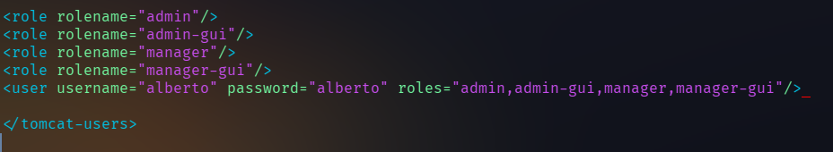
A continuación podemos acceder a Tomcat desde el puerto 8080 de la IP de la MV (en mi caso, 192.168.0.25:8080):
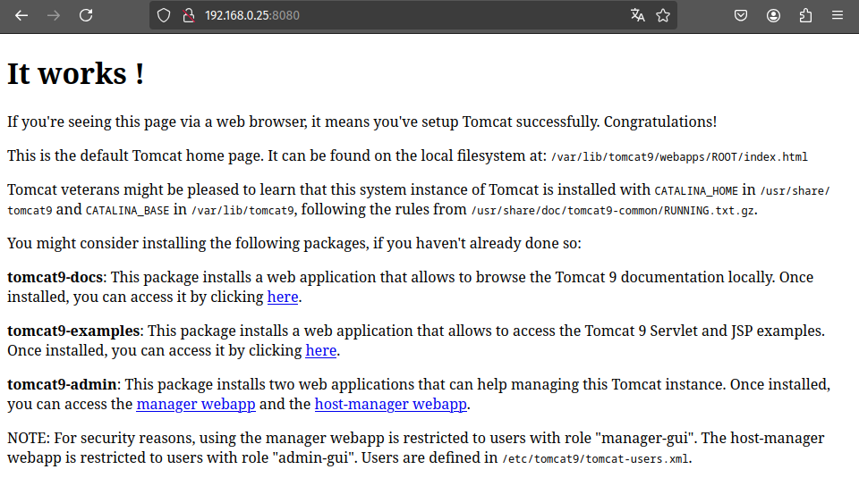
Ahora debemos instalar el paquete 'tomcat9-admin', que se encarga de administrar las aplicaciones web de Tomcat:
sudo apt install tomcat9-admin
Y podremos acceder al gestor de aplicaciones web indicando el nombre y clave de usuarios que anteriormente añadimos a la configuración de Tomcat en la MV. Esta vez, es necesario indicar que accedemos al recurso alojado en /manager/html ( es decir, 192.168.0.25:8080/manager/html, en mi caso particular):
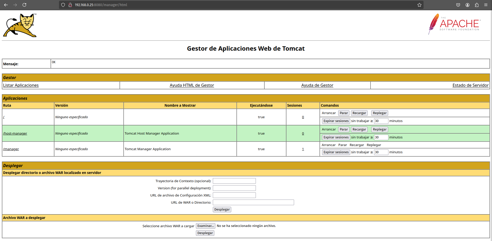
También podemos acceder al gestor de MV de Tomcat indicando igualmente usuario y clave (esta vez desde 192.168.0.25:8080/host-manager/html):
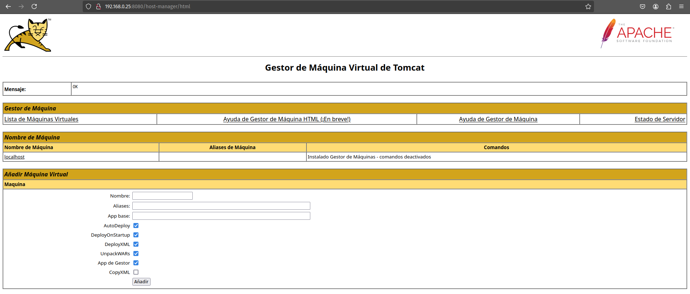
Despliegue con Tomcat
Una vez configurado Tomcat, podemos desplegar una aplicación indicando un archivo con extensión '.war':
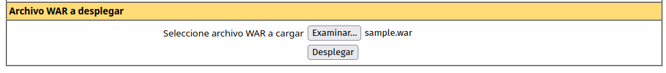
Ahora, en el apartado "Aplicaciones", podremos encontrar la aplicación que hemos desplegado y acceder a ella desde la ruta que viene indicada. En mi caso, la aplicación se encuentra en '/sample'. Accediendo a ella:
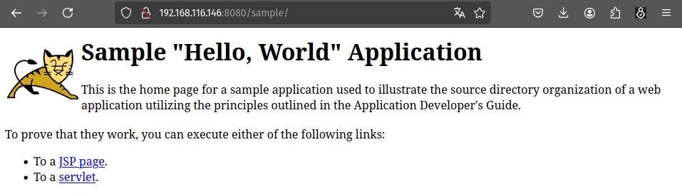
Instalación y configuración de Maven
Para instalar Maven sólo hace falta ejecutar:
sudo apt install maven
Ahora tendremos que volver a modificar el archivo de configuración '/etc/tomcat9/tomcat-users.xml' para añadir el rol de 'manager-script' y un nuevo usuario con tal rol, que debe ser diferente al usuario que ya habíamos creado en la instalación y configuración de Tomcat. En mi caso, el archivo ha quedado tal que:
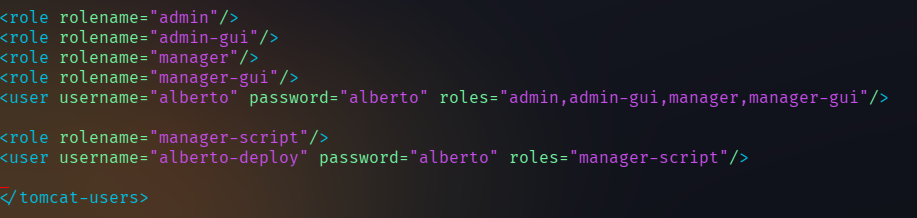
Además, también tendremos que especificar esta información en el archivo de configuración /etc/maven/settings.xml, dentro del bloque 'servers':
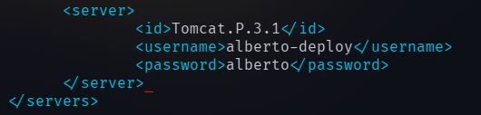
Despliegue con Maven
Aplicación de prueba
Para realizar el despliegue, utilizaré una aplicación de prueba en primer lugar. Primero, ejecuto:
mvn archetype:generate -DgroupId=alberto -DartifactId=aplicacion-prueba -DarchetypeArtifactId=maven-archetype-webapp -DinteractiveMode=false
Ahora, en el proyecto del directorio 'aplicacion-prueba/' que hemos generado, modificamos el archivo 'pom.xml'. En el bloque 'build' se añaden las siguientes líneas:
<build>
<finalName>aplicacion-prueba</finalName>
<plugins>
<plugin>
<groupId>org.apache.tomcat.maven</groupId>
<artifactId>tomcat7-maven-plugin</artifactId>
<version>2.2</version>
<configuration>
<url>http://localhost:8080/manager/text</url>
<server>Tomcat.P.3.1</server>
<path>/myapp</path>
</configuration>
</plugin>
</plugins>
</build>
Tras lo cual ejecutamos:
mvn tomcat7:deploy
Y si todo está correcto, Maven debe arrojar un mensaje "BUILD SUCCESS". Al volver a Tomcat ("ip_servidor:8080/manager" si accedemos desde la máquina anfitriona o "localhost:8080/manager" si accedemos desde la MV del servidor), encontraremos nuestra aplicación desplegada:
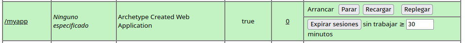
Despliegue de aplicación Java
Ahora que hemos comprobado que el despliegue puede realizarse correctamente sin errores, podemos realizar el despliegue de una aplicación real de Java. Para ello, podemos clonar una aplicación desde GitHub con:
git clone https://github.com/cameronmcnz/rock-paper-scissors.git
git checkout patch-1
# En el caso de este proyecto, debemos posicionarnos en la rama 'patch-1'
De nuevo, modificamos el archivo 'pom.xml' y le agregamos el mismo bloque 'plugin' del caso anterior. Volvemos a ejecutar el despliegue y si entramos a Tomcat podremos encontrar la aplicación lista:
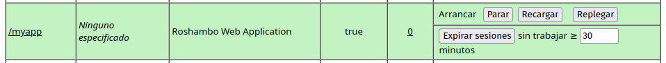
Y podremos acceder desde la ruta a la aplicación:
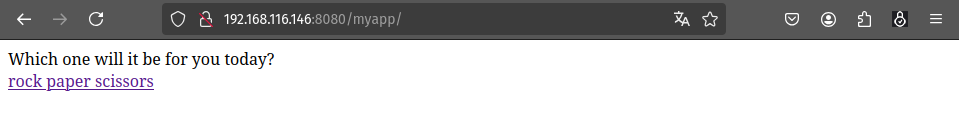
Cuestiones finales
Las contraseñas que maneja Tomcat se almacenan como texto plano ya que para el acceso a bases de datos, Tomcat necesita las contraseñas originales. Incluso si la contraseña fuese encriptada, como Tomcat es de código abierto, un posible atacante conocerá los métodos de encriptación y desencriptación de Tomcat, por lo que no existiría una seguridad efectiva en este sentido.